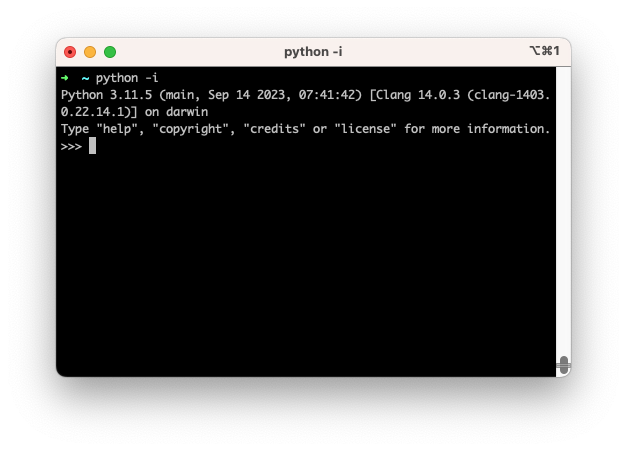

REPL
REPL:n (Integrated Development and Learning Environment) on interaktiivinen prompt, joka muistaa yhden session ajan kaikki luomasi muuttujat, funktiot ja objektit. Sillä on vaikea kirjoittaa yhtä tai kahta riviä pidempiä funktioita, mutta ensimmäisten askeleiden ottamiseen se on täydellinen leikkikenttä. Pythoniin liittyy myös kevyt IDE nimeltään IDLE, mutta siihen perehtyminen voidaan jättää tällä kurssilla pois: käytetään sen sijasta esimerkiksi Visual Studio Codea.
Tip
REPL on myös huomattavan nopea tapa tehdä perus laskutoimituksia: sitä voi käyttää korvaamaan käyttöjärjestemän vakio Calculator-sovelluksen nopeissa laskutoimituksissa.
REPL:n voi käynnistää uv-komennolla, ja uv käyttää vakiona tuoreinta asennettua Python-versiota, suosien omia asennuksiaan, mutta tukien myös järjestelmätason Pythonia. Toistaiseksi Git Bash:ssä node, python ja muut pseudoterminaalia käyttävät komentotulkit tulee ajaa winpty-ohjelmalla. Mikäli tätä lukiessa ei ole vuosi 2023 vaan jokin tuoreempi, tämä on voinut muuttua.
# macOS tai Linux tai PowerShell
$ uv run python
# Git Bash (Git for Windows)
$ winpty uv run python
Shelliin aukeaa uudenlainen prompt, jossa eivät enää toimi vanhat ls ja pwd komennot laisinkaan. Kyseessä on REPL, joka ymmärtää Pythonia. Pääset siitä pois komennolla quit() tai painamalla näppäinyhdistelmää CTRL + D (EOF, End Of File).

Kuvio 1: REPL käynnissä macOS:ssä. Mikäli sinulla on Windows, REPL:n ympärillä näkyvä ikkuna on eri näköinen. Huomaa, että kuvassa ei käytetä uv:ta vaan järjestelmätason Pythonia. Käytä sinä uv:ta.
Alla on esimerkkikoodia. Kokeile ajaa sama koodi REPL:ssä itse. Huomaa, että jos kirjoitat pelkän muuttujan nimen, se tulostaa sen arvon (nimeltään repr, printable representation). Vaihtoehtoisesti voit syöttää muuttujan sisäänrakennetulle print-funktiolle, joka tulostaa sen merkkijonona (str). Ero on pieni, mutta joissakin tapauksissa merkittävä.
>>> kilometers = 60
>>> minutes = 20
>>> speed_km_minute = kilometers / minutes
>>> speed_km_minute
3.0
>>> speed_km_hour = speed_km_minutes * 60
>>> print(speed_km_hour)
180.0
>>> name = "Robin"
>>> message = f"{name} once drove {speed_km_hour} km/h \U0001F603"
>>> print(message)
Robin once drove 180.0 km/h 😃
Alla lisää harjoituksia. Harjoitukset ovat tyypillistä Pythonia, joten kommentit alkavat #-merkillä ja REPL:stä tuttu >>> puuttuu rivin alusta.
# Tehtävä 1: keskiarvo
a, b, c, d = 5, 5, 10, 10
average = _
# Keksi, kuinka tämä lasketaan
# Tehtävä 2: muuttujan jyrääminen
a = 5
a = "Kissa"
print(a)
# Tutki, mitä tulostuu.
# Tehtävä 3: docstring
help(print)
# Katso, mitä help tekee. Pääset pois q-näppäintä painamalla.
# Tehtävä 4: nollalla jakaminen
result = 500 / 0
# Tutki, mitä tapahtuu kun painat enteriä
# Tehtävä 5: f-string
number = 42
print(f"{number:08b}")
# Pohdi, mitä tämä tekee.
# Tehtävä 6: sammuta REPL
quit()
# Tai näppäinyhdistelmä CTRL + D (EOF, End Of File)